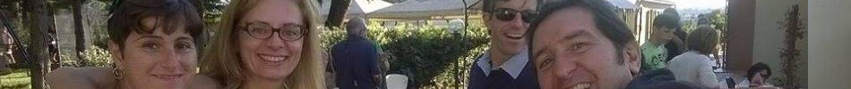

12 Novembre 2018
[

]
Home
Chi siamo
Attività
La Storia
News
Dove siamo
Contatti
home
informativa privacy
area video
contatti
documenti
Dove siamo
eventi
forum
fotogallery
La storia
links
mappa del sito
news
servizi
sponsor
Area menu di navigazione
Menu
Le nostre attività
Documenti
Documenti privati
Convegni, incontri, feste, assemblee
News
Forum
Foto gallery
Video gallery
Links
Contatti
Gestione
Area privata
[
Registrati
]
[
Recupera password
]
percorso:
Home
>
Home
altre pagine
Contatti
Iscrizione alla newsletter
Contatti
Richiedi informazioni
Informativa sui cookies
Informativa sulla privacy
Chi siamo
Condizioni di acquisto
Dove siamo
La storia
Convegni, incontri, feste, assemblee
Convegni
Conferenza Europea sulla Sindrome di Williams
Partita Fiorentina - Verona
Sindrome di Williams, Insieme per il Futuro
Visita guidata al Museo degli Uffizi
Eventi
13 settembre 2014 - Pranzo livornese!
1° settembre 2014 - Un giorno alle Terme
2015 04 Assemblea dei Soci e simpatizzanti
Assemblea dei Soci Sindrome di Williams
Giornata per famiglie
Incontro pre-natalizio AISW Toscana con Assemblea
La pazza Gioia - rappresentazione teatrale
Mini trofeo Tutti a pesca
Nascita Associazione Regionale Aisw Toscana Onlus
Pranzo di Natale
Week end dedicato ai genitori, 1°-2 novembre 2014
Week end per famiglie - L´arrembaggio
Week end per famiglie 6-7 giugno 2015
Documenti
Indagini e ricerche
Gabrielle, un amore fuori dal coro: piccola recensione.
Ricerche scientifiche
Defining the Brain Phenotype of Children With Williams Syndrome
Le cellule del corpo parlano fra loro
Le ricerche sulla Sindrome di Williams
Protocollo di Pronto Soccorso per la Sindrome di Williams
The Gregarious Brain
Tesi di laurea e relazioni
Lo sviluppo delle capacità visuo-spaziali in un ragazzo con sindrome di Williams
Sindrome di Williams sessualità e unicità della persona
Diaspro Rosso, modello di rilevazione dei costi sociali
II Rapporto sulle reti di assistenza per Malati Rari
La Sindrome di Williams. Dalla ricerca all´intervento psicoeducativo.
Studio Pilota sui costi sociali e bisogni assistenziali delle MR
Le nostre storie
Il Dalai Lama insegna
La storia di Sara
La storia di Stefano
La storia di Timber - 2012
Un articolo sulle Malattie Rare pubblicato in Norvegia
Leggi di riferimento
Documenti utili per la continuità scolastica
Alcuni documenti presentati per assicurare la continuità didattica
CoorDown: Vademecum Scuola 2014
Art. 25 Legge 114/2014. Semplificazione per i soggetti con disabilità
Decreto Ministeriale 2 agosto 2007 - esenzione dalle revisioni
Linee guida per l´integrazione scolastica degli alunni con disabilità
Scadenze annuali: la dichiarazione ICRIC
Sentenza TAR del Lazio su nuovo ISEE 2015 - n. 2458 dell´11.02.2015
Newsletter
Newletter n. 1 - dicembre 2013
Newsletter n. 2 - luglio 2014
Newsletter n. 3 - settembre 2014
Newsletter n. 4 - gennaio 2015
Newsletter n. 5 - Settembre 2015
Forum
Le discussioni
Commenti alla presente stagione
Quali attivitá svolgono i nostri ragazzi nel tempo libero?
Foto gallery
Incontri delle Famiglie
Mini trofeo Tutti a pesca
Mini trofeo Tutti a pesca edizione 2013
Mini trofeo Tutti a pesca edizione 2014
Visita guidata al Museo degli Uffizi 29 novembre 2013
Visita guidata al Museo degli Uffizi 29 novembre 2013
Assemblea 4 maggio 2013
Assemblea dei Soci 1° giugno 2014
Capodanno 2016 - Canottieri Firenze - Special Olympics
Dynamo Camp 2015
Venezia, XXX Giochi Estivi Special Olympics
Week end dedicato ai genitori, 1°-2 novembre 2014
Le nostre attività
I momenti di approfondimento
2006 - 18 dicembre "Le possibilità offerte dalla Legge 68 (inserimento lavorativo) e le loro realizzazioni pratiche"
2007 - 14 aprile: "La riabilitazione psicomotoria e gli interventi educativi sui bambini disabili, con particolare attenzione ai portatori di Sindrome di Williams"
2007 - 14 aprile: "Problemi e risorse familiari. I percorsi possibili"
2009 - 30 maggio: Convegno di approfondimento sulla Sindrome di Williams
2011 - 11 maggio: Tavola Rotonda
2012: Convegno "Due occhi come due stelle cinquant´anni dopo"
2015/2016: Autonomia per Genitori!!!
Costi sociali per le Malattie Rare
I momenti di svago
2006 - Social Party
2006 - Un giorno al Parco Divertimenti di Tirrenia
2007 - 14 aprile: una pizzata dopo il seminario
2007 - 17 dicembre: Pranzo di Natale c/o la Meridiana
2007 - 19 dicembre: Babbocottero
2008 - 12 ottobre Pranzo e Assemblea soci
2008 - 18 dicembre Babbocottero
2008 - Pizz´a Pasqua!
2008 - Un week end di mare - Follonica
2009 - 12 dicembre: La festa di Natale
2009 - 15 marzo: Festa a Livorno
2010 - 19 settembre: Pranzo!
2011 - 18 dicembre: Festa di Natale e Assemblea
2012 - dicembre Disney on Ice
2013: Mini Trofeo "Tutti a Pesca"
2014 Mini Trofeo Tutti a Pesca
2015 01 Pranzo e Visita Guidata a San Bartolomeo
Visita alla Galleria Palatina
La sensibilizzazione e raccolta fondi
2006, 23 dicembre - Mercatino a Vicchio
2006: Festa della Toscana: le Associazioni di Scandicci si presentano
2007 - 10 marzo Conferenza del Volontariato di Lucca
2007 - 16 marzo Partita di Calcetto
2007 - 20 maggio. Coro Gospel
2008 - 10 maggio Mercatino di "Icche c´è c´è" a Scandicci
2008: Donazione della Bassilichi
2008: Donazione della Fosber
2009 - 24 settembre: Festa Eticamente
2009, giugno: la creazione delle bomboniere per un matrimonio
2010 - 28 febbraio: la Marcia per i Malati Rari a Roma
2010 - 6 e 13 febbraio - il Mercatino!
2012 - 22 aprile
2012 Volontariato alla profumeria "Gardenia"
Donazione di una Cristalleria
Gadget autoprodotti
Giovediamoci per il Sociale
Si fa festa!!!!
Prepariamoci al lavoro
2007: possibilità di lavoro a tempo determinato per sei mesi
2009 - 2010 : l´esperienza del Bar Staz
2009 - 2010 Laboratorio Orafo
2011: La tipografia
Protocollo di Intesa con Coop Matrix
Presa in carico medica, riabilitazione e ricerca.
2006 - Una ricerca della Sapienza di Roma
2007: Convenzione con Davide e Golia per la psicomotricità
2009: studio sulla gestualità all´OPBG
2010: Convenzione con la Cooperativa Il Girasole
2010: Corso di massaggio infantile
2011: Laboratorio di Musicoterapia
Ospedale Le Scotte, Siena
Ospedale Meyer Firenze
Progetti di autonomia
2006 Agosto Settimana a Follonica
2006/2007: Percorso di autonomia per bambini fino a 12 anni
2007 - Festeggiamo la Befana
2007 - Una settimana di vacanza a Follonica
2007 Coeli Aula - un fine settimana con gli scouts
2008 - Week end di autonomia per i bambini età scolare
2015/2016 - Aiutami a fare da solo
Compagni di Cordata
Teseo: un sistema di rilevazione satellitare
Links
I luoghi di cura e terapia
Associazione Davide e Golia Onlus
IRCCS Stella Maris
Ospedale Pediatrico Meyer
Le Associazioni che lavorano sulla disabilità
Associazione VelaInsieme
SciAbile: un momento di vacanza sulla neve
Link Generici
Sito Per
News
Giovediamoci per il Sociale: un grande GRAZIE!
Incontro sulla Sessualità a Prato
News Generiche
"Alla ricerca di un percorso a misura di bambino"
Affettività e sessualità nella Sindrome di Williams e nella disabilità in generale - Convegno
Alla ricerca di maggiore AUTONOMIA!!!!
Amore, sessualità: come disabilità diverse affrontano questo argomento
Appartamento a Cannes
Assemblea dei soci e simpatizzanti
Assemblea generale dei Soci AISW Toscana Onlus
Assemblea Nazionale AISW
Auguri di Buone Feste
Aurora: CAMPIONESSA ITALIANA SUR CASTING PER DIVERSAMENTE ABILI
Biglietti partita Fiorentina Verona
Biglietti Piscina Comunale di Firenze "Costoli"
Ci siamo spostati!
Come affronto la vita
Concorso canoro "Il sogno più grande"
Concorso fotografico Eurordis 2014
Conferenza europea sulla Sindrome di Williams
Conferenza Nazionale sulle politiche per la disabilità, Firenze 16-17 settembre
David Wurtzel ci ha lasciati
Due nostri ragazzi a Compagni di Cordata
Equità di accesso ai servizi socio sanitari e inclusione sociale dei malati rari: il progetto Carosello
Firmato il Protocollo di Intesa con la Coop Matrix, per tirocini lavorativi
Francesco Cassano e La Compagnia Teatrale Tortorese
GIORNATA MONDIALE MALATTIE RARE
Giovediamoci per il Sociale: un grande GRAZIE!!!!!
Giovediamoci per il Sociale: un grande GRAZIE!!!!!
Giuseppe De Vivo intervistato insieme ai ragazzi
Gli strumenti per l´autonomia possibile
Goletta Pandora salpa per i ragazzi SW
I prossimi appuntamenti associativi
I ragazzi con sindrome di Williams al Giffoni Film Festival: giurati speciali!
III Mini Trofeo Tutti a Pesca
Il concerto di Natale di Eugenio
Il nostro Stefano in cucina
Inauguriamo il nostro nuovo sito!!!
Incontro "pre-natalizio" delle famiglie
INPS: introduzione nuova funzionalità per trasmissione modello AP70 per minori divenuti maggiorenni già titolari di indennità.
Iscrizione agli elenchi del 5 per mille 2013
L´AISW Toscana in Italia e nel mondo
L´esperienza Sanremo Doc
L´intervista integrale a Giuseppe De Vivo
La foto ufficiale di Martina con la sua famiglia.
Le famiglie Williams in Udienza Generale dal Papa
Le nostre partecipazioni a Telethon
Los Angeles 2015: Special Olympics World Games
Martina parteciperà alla Maratona Telethon
Mia sulla TV Francese!!
Mini Trofeo "Tutti a pesca!"
Mini Trofeo "Tutti a pesca" Edizione 2014
Mini Trofeo tutti a Pesca 2015
Moira Orfei, il circo: biglietti a disposizione per i soci
Mostra di David Wurtzel
Musica e Sindrome di Williams, le esperienze di Francesca Raimondi.
Newsletter n. 2 - luglio 2014
Notizie dal Nazionale
Pomeriggio di benessere dedicato alle mamme
Pranzo autunnale e Assemblea Soci
Pranzo sociale e visita alla Chiesa di San Bartolomeo
Presentazione del volume ´RomAntica cultura´
Primo giorno di lavoro di Emanuela
Quota Associativa Annua
Quota Associativa annuale AISW
Resoconto Visita agli Uffizi
Scambio di esperienze sui temi della discriminazione
Segnalazione: Un libro sulla Sindrome di Williams
Sindrome di Williams, Insieme per il Futuro
Taylor Swift visita un bambino con la Sindrome di Williams
Ultima chiamata per il giro in barca a vela!
Un cortometraggio sulla Sindrome di Williams
Un giro in bici di 9000 km per sensibilizzare sulla Sindrome di Williams
Un nuovo finanziamento per ricerche sulla Sindrome di Williams
Un nuovo progetto di Aldo Soligno
Un nuovo video nella nostra Gallery....
Un nuovo video sulla Giornata Mondiale delle Malattie Rare
Una grande passione usata come mezzo di sensibilizzazione
Una sentenza del Tar sul nuovo ISEE
Una serata di divertimento e di raccolta fondi
Uno spot di sensibilizzazione a cura dell´Associazione Americana
Visita guidata agli Uffizi
Week end per famiglie 6 e 7 giugno
Week end per genitori 1-2 novembre
Week end per genitori 1-2 novembre
Williams Music Camp - Irlanda 2014
Yenetics: test prenatale per malattie genetiche rare.
Partner
gli sponsor
Le Associazioni amiche
Uniamo Federazione Italiana Malattie Rare Onlus
questionari
Video gallery
Categoria generica
100 modi di amare (con la Sindrome di Down)
Convegno "All you need is love"
Dottor Musica, Alessia
febbraio 2010 - Figlio di un Dio Minore
Giornata Mondiale delle Malattie Rare 2016
Happy con la Sindrome di Williams
Il video dei Ladri di Carrozzelle
Inaugurazione di IRIS, la nuova imbarcazione di Special Olympics
Malattie Rare e Vita Quotidiana
Ruben alla guida.
settembre 2012 - Sanit Roma
Tatiana Bendoni e la Sindrome di Williams - Convegno
Tesi di Laurea di Marco Romeo - Roma
Vela Tradizionale: una settimana in Goletta Pandora